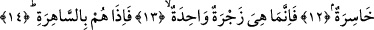

İLK HALİMİZE Mİ
DÖNDÜRÜLECEĞİZ?
6. Birinci üflemenin (kâinâtı) sarstığı,
7. Onu ikinci üflemenin takip ettiği gün,
8. (O gün) yürekler tir tir titrer.
9. Gözler yorgun düşer,
10. Öldükten sonra biz (dünyadaki) ilk hâlimize mi döndürüleceğiz?
11. (Hem de) çürümüş kemikler olduktan sonra mı? derler.
12. “O zaman bu ziyanlı bir dönüş olur” dediler.
13. Bu dönüş sâdece bir seslenmeye bakar.
14. Birdenbire kendilerini mahşerde buluverirler.
Bu cümle gizli olan cevab ile mansubdur. O gizli cevab yukarda işâret ettiğimiz gibi
“mutlaka diriltileceksiniz” ifâdesidir. Racife’den maksad, gelip çattığında yeryüzü ve
dağlar gibi sâkin olan her türlü cisimleri tir tir titreten olaydır. Bir başka ifâdeyle
yeryüzünü ve dağları şiddetli bir biçimde sarsan ve o günün korkusundan büyük bir
zelzele ile titreten olaydır. Bu olay, sura birinci üfürüş olayıdır. Burada titretme ve
sarsma fiili, mecâzen “üfürme” fiiline isnâd edilmiştir. İsnâdın yönü, “fiilin sebebine
isnâdı” kabilindendir. Şöylesine ki bu üfürüşün meydana gelişi, yeryüzündeki sâkin olan
cisimlerin harekete geçmelerine ve sarsılıp deprem yaşamalarına sebeb olacaktır.
Râcife fiilinin kökü recfan kelimesidir. Bunun anlamı “şiddetli bir biçimde sarsılmak”
demektir. Nitekim kelimenin yapısındaki bu sarsılma anlamından dolayı depreme recfe
demişlerdir. Bu âyet-i kerimede süflî olanın değişikliğe uğramasının ulvi olanın
değişikliğe uğramasından -her ne kadar kesin olmasa da- öncelikli olduğuna işâret
vardır.